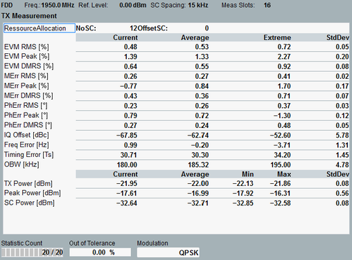

View TX Measurement
This view contains tables of statistical results for the TX and RX measurements.

TX measurement
The table provides an overview of statistical values obtained in the measured slot.
Other detailed views provide a subset of these values:
- Resource allocation: Configured subcarrier allocation, see "No. of Subcarriers, Start Subcarrier"
- EVM, magnitude error ("MErr"), phase error ("PhErr"):
For the SC-FDMA data symbols (all symbols except reference symbol), RMS and peak values are provided.
The DMRS value refers to the reference symbol (demodulation reference signal). - I/Q origin offset: The I/Q offset is estimated from the distribution of the constellation points.
- Carrier frequency error: offset between the measured carrier frequency and the nominal RF frequency of the measured channel
- Timing error: difference between the actual timing and the expected timing
The timing error measurement requires an "external" trigger signal to derive the expected timing.
The unit Ts stands for the sample interval, see "Resources in Time and Frequency Domain". - Occupied bandwidth (OBW): width of the frequency range that contains 99% of the total integrated power of the transmitted spectrum
- TX power: RMS averaged power over all samples in the slot, equivalent to the sum of the powers of all (allocated and non-allocated) SCs
- Peak power: peak power of all samples in the slot
- SC power: arithmetic mean value of the average powers in all allocated subcarriers
For query of the results via remote control, see "Modulation Results (Single Values)".
For the parameters below the table, see "Common View Elements".